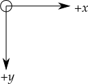
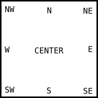
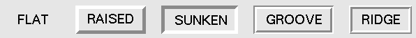

Avant d’examiner les widgets disponibles, prenons le temps d’observer comment certains de leurs attributs communs - comme les tailles, les couleurs et les polices de caractères (fontes) - sont précisés.
Les différentes dimensions comme la largeur (width), la hauteur (height), etc. peuvent être précisées dans différentes unités.
Si vous indiquez une dimension par un entier, elle est supposée être en pixels.
Vous pouvez préciser une unité en utilisant une chaîne de caractères qui contient un nombre suivi d’une unité :
- c : Centimètres
- i : Pousses (Inches)
- m : Millimètres
- p : Points d’impression
Comme dans la plupart des systèmes d’affichage, l’origine de chaque système de coordonnées est située à son coin supérieur gauche, les valeurs de x augmentant vers la droite et les valeurs de y augmentant vers le bas.
L’unité de base est le pixel avec le coin supérieur gauche de coordonnées (0,0). Les coordonnées indiquées par un entier sont toujours exprimées en pixels, mais chaque coordonnée peut être indiquée via une chaîne de caractères dans une unité particulière; voir Les dimensions.
Il y a deux manières générales pour indiquer une couleur dans tkinter.
Vous pouvez utiliser une chaîne de caractères qui précise la proportion de rouge (red), vert (green) et bleu (blue) en hexadécimal:
- #rgb : quatre bits par couleur
- #rrggbb : huit bits par couleur
Par exemple, #fff est blanc, #000000 est noir, et #00ffff est un cyan pur (vert plus bleu).
Vous pouvez aussi utiliser n’importe quelle couleur définie localement par son nom standard. Les couleurs 'white', 'black', 'red', 'green', 'blue', 'cyan', 'yellow', and 'magenta' seront toujours disponibles. D’autres noms peuvent fonctionner selon la configuration de votre ordinateur.
Le module Tkinter définit un certain nombre de constantes d’ancrages que vous pouvez utiliser pour contrôler l’endroit où un widget est positionné relativement à son contexte. Par exemple, les ancrages peuvent préciser l’endroit où un widget est situé à l’intérieur d’un cadre (Frame) lorsque celui-ci est plus grand que le widget.
Ces constantes sont données comme sur une boussole où le nord est en haut et l’ouest à gauche. Nous prions les lecteurs de l’hémisphère sud de nous pardonner ce chauvinisme du nord.
Les constantes d’ancrages sont montrées ci-dessous:
Par exemple, si vous créez un petit widget dans un large cadre et utilisez l’option anchor='se', le widget sera placé au niveau du bord inférieur droit du cadre. Si vous utilisez anchor='n', il sera centré sur le bord haut du cadre.
Les ancres sont aussi utilisées pour préciser où positionner un texte relativement à un point de référence. Par exemple, si on utilise 'center' comme une ancre pour un texte, il est centré horizontalement et verticalement autour du point de référence. L’ancre 'nw' le positionnerait de telle sorte que le point de référence coïncide avec le coin nord ouest de la boîte qui contient le texte. L’ancre 'w' le centrerait verticalement avec le bord gauche de la boîte du texte sur le point et ainsi de suite.
Le style de relief d’un widget se réfère à la simulation de certains effets 3D autour de l’extérieur du widget. Voici les différentes possibilités :
Les valeurs peuvent être précisées par des chaînes de caractères comme 'raised', 'sunken', 'flat' ...
La largeur des bords dépend de l’option borderwidth du widget. Ici, cette largeur a été fixée à 5 pixels alors que par défaut elle vaut 2 pixels.
On propose deux méthodes pour afficher des images dans votre application tkinter.
Pour afficher une image du type .gif, .pgm ou .ppm, vous aurez besoin du constructeur:
PhotoImage(file=f)
où f est le nom d’un fichier image. Le constructeur retourne une valeur qui peut être utilisée partout où tkinter attend une image. Notez qu’il est nécessaire de conserver une référence vers cette valeur:
logo = PhotoImage(file='test.gif') # ne pas supprimer cette référence
Label(image=logo).grid()
# Label(image=PhotoImage(file='test.gif')) ne fonctionnera pas !
Une chaîne de géométrie est un moyen standard de décrire à la fois la taille et la localisation d’une fenêtre principale sur l’écran du bureau.
Une chaîne de géométrie a la forme générale:
'wxh±x±y'
où :
Par exemple, une fenêtre crée avec geometry='120x50-0+20' aura une largeur de 120 pixels, une hauteur de 50 pixels, son bord droit sera collé à celui du bureau à 20 pixels du haut de celui-ci.
Le terme fenêtre (window) se rapporte à une zone rectangulaire du bureau.
tkinter nomme toutes ces fenêtres en utilisant un nommage «hiérarchique» :
Pour obtenir le nom d’un widget w, utilisez str(w).
Voir aussi Méthodes communes à tous les widgets pour les méthodes que vous pouvez utiliser afin d’agir sur les noms de fenêtre, plus spécialement les méthodes winfo_name(), winfo_parent(), et winfo_pathname().